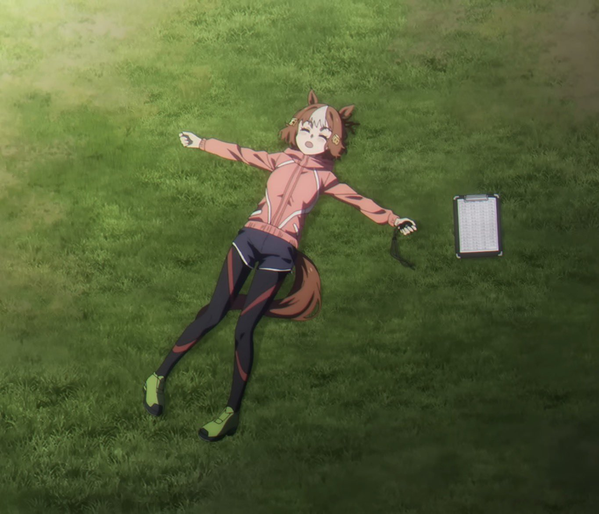
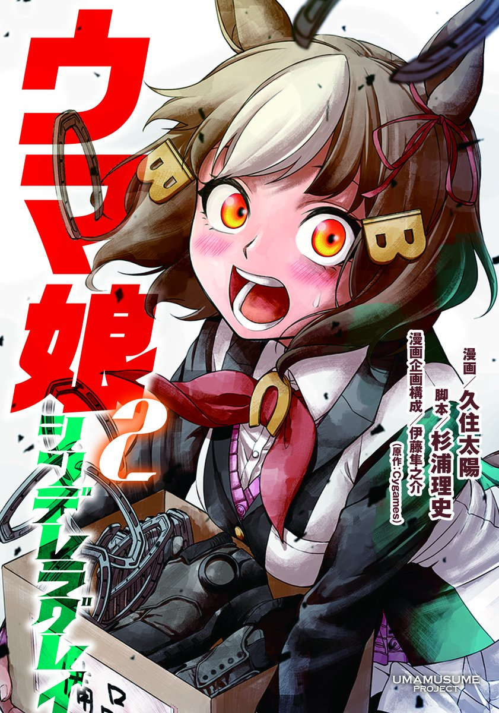
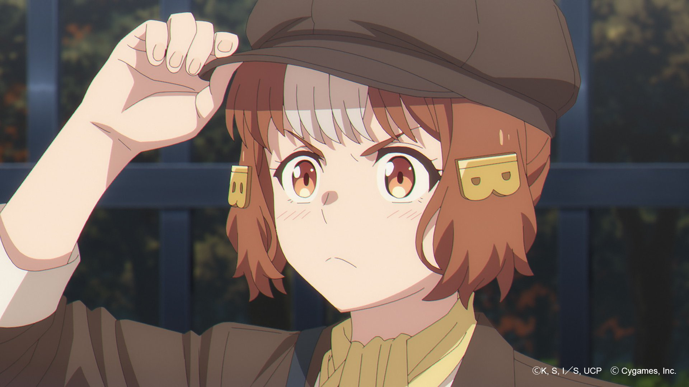
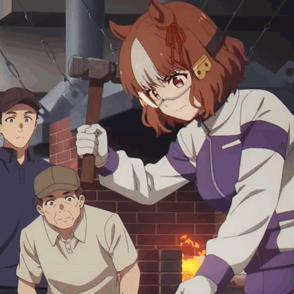

Бельно Лайт - девушка с округлым лицом, карими глазами и короткими волосами теплого
каштанового цвета, подчеркиваемого отчетливой белой прядью посередине. Ее волосы украшают
две золотые заколки в форме буквы "B" и красная лента, завязанная узлом на её правом
ухе. У нее нет своего гоночного наряда и чаще всего её можно увидеть в школьной форме.
В Uma Musume у всех лошадей есть украшение (обычно бантик) на одном из ушей. Украшение на правом
ухе означает, что настоящая лошадь была жеребцом, на левом ухе — кобылой. Бельно Лайт носит
красную ленту на левом ухе, т.к лошадь, на которой она основана, Твин Би — кобыла.
Цвет волос Бельно Лайт напоминает каштановый окрас Твин Би.
Имя Твин Би (Twin Bee) созвучно с "Twin B" (двойная "B"), что скорее всего послужило вдохновением
для двух заколок в виде буквы "B" у Бельно Лайт.
О Бельно Лайт и Твин Би

Бельно Лайт в "Серой Золушке"
Твин Би (22 мая 1985 г. - ???) - японская скаковая лошадь конца 1980-х годов,
кобыла. Всю свою жизнь жила и участвовала в гонках в Касамацу и выиграла 10 из 45 забегов.
Вероятно является источником вдохновения для персонажа Бельно Лайт из аниме и манги "Девушки-пони: Серая Золушка".
Имя Твин Би на японском: ツインビー
Происхождение имени: Твин Би разделяет имя с TwinBee, аркадной видеоигрой, выпущенной компанией
Konami в 1985 году.
История гонок: [10-11-3-21].
Имя Бельно Лайт на японском: ベルノライト
Происхождение имени: имя Бельно Лайт является комбинацией элементов из видеоигры TwinBee.
Бельно (Belno) созвучно с bell (англ. "колокол"), предметом из игры, а Лайт (Light) - имя протагониста
TwinBee.
Интересные факты

Обложка 2 тома манги "Серая Золушка"
Бельно Лайт является персонажем, появляющимся в аниме и манге "Девушки-пони: Серая Золушка",
но не появляющимся в игре Uma Musume: Pretty Derby.
Бельно Лайт, как и лошадь, на которой она основана, Твин Би, родилась в Касамацу и проиграла
свою дебютную гонку там. В отличие от Бельно Лайт, Твин Би до конца своей карьеры так и не
покидает Касамацу.
На этом может быть основано то, что в сюжете "Серой Золушки"
после Касамацу Бельно Лайт не решает дальше преследовать карьеру бегуньи и
поступает в токийскую академию Трэсен на направление спортивной науки.

Помимо лошади Твин Би, Бельно Лайт также основана на некоторых людях, которые ухаживали за
настоящим Огури Кап.
Она основана на Масару Минова, кузнеце, создавшего подковы для настоящего
Огури Кап. После того, как
Огури Кап покинул Касамацу, Масару Минова поехал вместе
с ним, чтобы продолжить ковать для него подковы.
Это очень похоже на роль Бельно Лайт в сюжете "Серой Золушки". В Касамацу она
помогает Огури Кап с выбором спортивной обуви, а позже
отправляется вместе с ней в Токио, чтобы и дальше всячески её поддерживать.
"Серая Золушка" также показывает, что Бельно Лайт обладает навыками кузнечного дела и
умеет ковать подковы.

Еще один человек, на котором вероятно основана Бельно Лайт, - это Томомицу Кавасэ,
конюх настоящего Огури Кап. Выполняя свою работу конюха, он обнаружил признаки
заболевания на копытах Огури Кап.
На этом основана сцена в "Серой Золушке", в которой Бельно Лайт замечает, что
кроссовки Огури Кап испорчены.
Бельно Лайт живет в очень обеспеченной семье (как показано в главе 171 "Серой Золушки", её семья
владеет крупнейшей в Японии сетью магазинов спортивных товаров для девушек-пони).
Ее семейный бизнес основан на реальной компании "XEBIO Group", общий объем активов
которой превышает 200 миллиардов йен. Их сеть магазинов называется Super Sports Xebio.